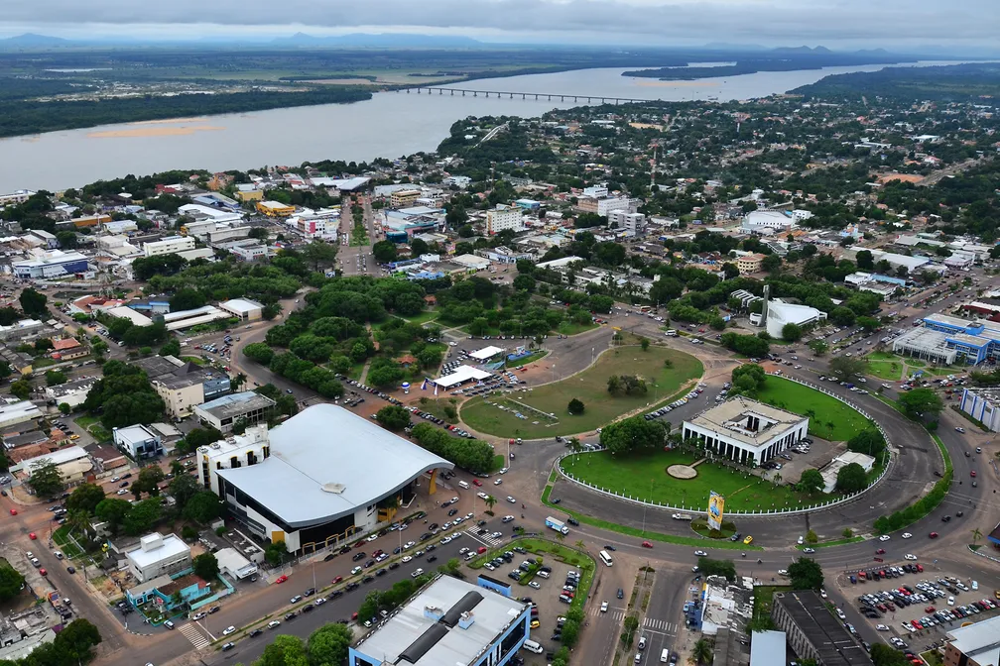

Roraima é o estado mais ao norte do Brasil, conhecido por sua rica biodiversidade e paisagens naturais, como a Serra do Tepequém e o Monte Roraima. Sua economia é baseada na agricultura, pecuária e extrativismo mineral. A cultura local é fortemente influenciada pelas tradições indígenas e pelas comunidades imigrantes.
 VOLTAR